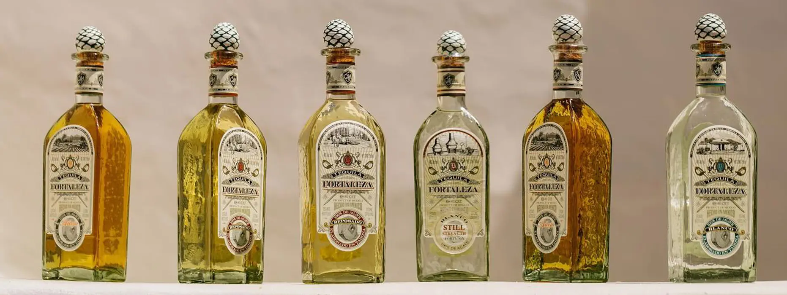

Fortaleza — tequila vyráběná způsobem pradědů

Historie Fortalezy je úzce spjata s rodinou Sauza, jedním z „velkých tří" zakladatelských rodů tequily. V roce 1976 rodina prodala slavnou značku Sauza nadnárodnímu koncernu — stará rodinná palírna La Fortaleza ale zůstala. Stála zavřená a chátrala celých 34 let.
V roce 1999 se Guillermo Erickson Sauza, pátá generace rodiny, rozhodl palírnu obnovit — přesně tak, jak ji provozoval jeho prapradědeček před 150 lety. První lahev Fortaleza (v Mexiku jako Los Abuelos) vyšla v roce 2005 a změnila pravidla prémiových destilátů.
Palírna La Perseverancia se nachází přímo ve městě Tequila v Jalisco. Fortaleza používá tradiční tahonu, fermentaci v otevřených dřevěných tancích a destilaci v malých měděných alambikách s omezenou kapacitou.
„Chceme dělat tequilu tak, jak ji dělali naši pradědové."
— Guillermo Erickson Sauza, zakladatel Fortaleza (2005)
Los Abuelos = „Prarodiče"
V Mexiku se Fortaleza prodává pod tímto názvem — hold předkům, kteří tradici položili.
Podívejte se na tradiční výrobu tequily přesně tak, jak ji dělali pradědové rodiny Sauza.
Křišťálově čistý, intenzivní agáve, citrus, pepř. Žádné přídavky.
6 měsíců v amerických dubových sudech. Jemná vanilka, agáve stále dominuje.
2 roky v americkém dubu. Karamel, sušené ovoce, plný závěr.
Unfiltered, unchill-filtered. 46% ABV. Surová síla agáve pro nadšence.
Tradiční kamenný mlýn rozmělňující upečené piñas. Zachovává více vlákniny a agávových olejů pro komplexnější chuťový profil.
Žádný glycerin, karamel ani jiné additives. 100% přírodní produkt. Co je v lahvi, přineslo agáve a čas.
Každá šarže je limitovaná. Osobní dohled výrobce na každém kroku — od pole až ke sklenici.
NOM 1493, certifikováno CRT. Pravidelně oceňováno světovými degustacemi a zařazováno mezi top řemeslné tequily.
V palírně NOM 1493 nenajdete žádné moderní počítače ani nerezové difuzéry. Vše je podřízeno tradici.
Agáve se peče v malých cihlových pecích po dobu 36 hodin. Cukry v agáve pomalu karamelizují a dodávají destilátu hloubku, kterou v autoklávech nikdy nezískáte.
Fortaleza drtí 100 % produkce dvoutunovou tahonou z vulkanického kamene. Jemně odděluje šťávu od vláken bez uvolnění hořkých látek z jádra rostliny.
Fermentace probíhá v otevřených dřevěných kádích (tinas) až 5 dní. Využívají se vlastní kmeny kvasinek, které rodina kultivuje po generace.
Destiluje se nadvakrát v malých měděných kotlích — přímých potomcích těch původních z 19. století. Omezená kapacita, maximální kontrola kvality.
Každá lahev je ručně foukaná v Mexiku — drobné bublinky ve skle jsou záměrné. Každý kus je originál.
Korek je zakončen keramickou hlavicí ve tvaru piñy (ořezaného srdce agáve), která je ručně malovaná.
Na zadní straně každé lahve je ručně napsané číslo šarže. Chuť se mezi jednotlivými Lote mírně liší — což sběratelé milují.
Prémiové rumy sázejí na dlouhé zrání v sudech a mnohdy i na dolaďování chuti — solera systém, karamel, cukr. Fortaleza sází na čistotu suroviny.
Zejména Still Strength Blanco (46 % alkoholu) ukazuje, že tequila nepotřebuje ani den v sudu, aby byla komplexní, bohatá a jemná.
Je to destilát, který chutná po zemi, olivách, citrusové kůře a pečeném másle — bez jediného dne v sudu.
Tento report slouží pouze pro informační účely. Ohledně lékařského poradenství nebo diagnózy se obraťte na odborníka.